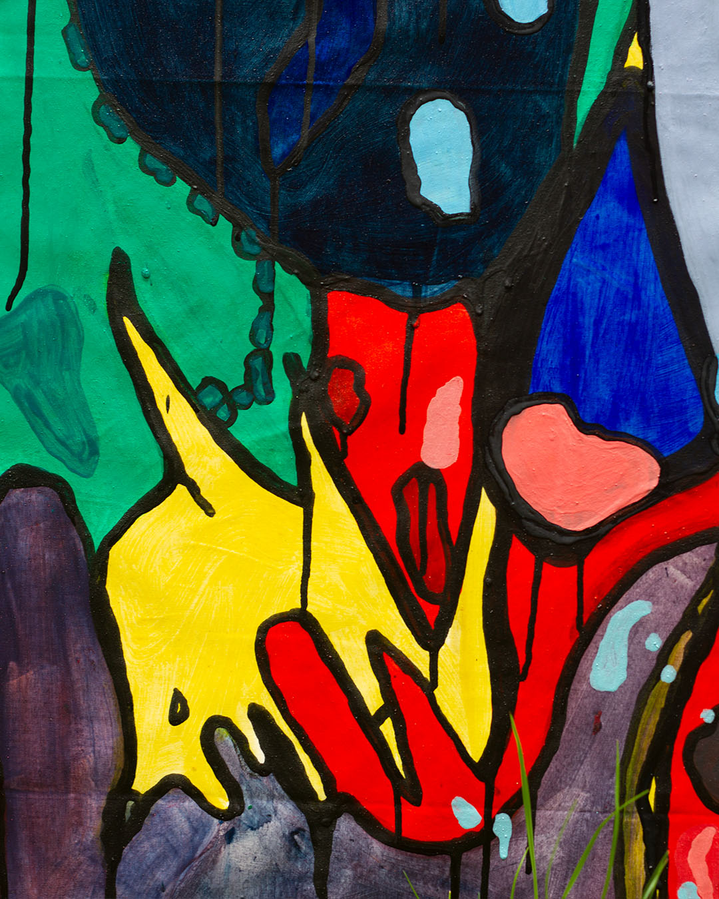

The Form Of Techno


The Pull Of The Chaos, 2020, acrylic on canvas, 70 x 110 cm

I Don't Know If It Is The Virus The Problem, 2020, acrylic on canvas, 70 x 110 cm

Melting, 2020, acrylic on canvas, 90 x 150 cm
If we talk about techno we must first talk about the birth of electronic music who born in 1950 with the first technical tools which creates sounds, with synthetic sound and signal generators and recorded with magnetic tape. From these years comes the first radio stations in Europe. Pierre Schaeffer created the very first pieces of electronic music and concrete music. 30 years after, Kraftwerk, a group in Germany, Dusseldorf become the most important actor of new genre of electronic music, the Krautrock and Synth-Pop. Techno was born symbolically in 1985 with the creation by Atkins of the independent label Metroplex, followed by Transmat (1986) and KMS (1987). In 1988, in Chicago the Acid House music born, the very first label appears, the first creation of vinyl and them record shops born in UK, Holland, Germany, France. The term "Techno" comes after in Detroit, one years after acid house in 1989 in Chicago, it’s derived from the word "technology » like the technology of the futur, it’s a kind of electronic music, the difference it make the people dance, "losing yourself in powerfull music simple as that", and it's characterized by sound more darker and sometimes atmospheric and especially played in basement, desafected hangar, gashouder. In ten years "Then techno had become a global phenomenon featuring Djs like Laurent Garnier, Sven Väth, Dave Clarke, Orlando Voorn. Meanwhile, the original house and techno genres had split into dozens of sub-genres ranging from hardcore and drum's n'bass, big beat, trance, psytrance and speed garage, gabber". In 1997, comes the first big festival AWAKENINGS, Jeff Mills, Derrick May, Richie Hawtin, Laidback Luke, Surgeon (1998), Monika Kruse, Marco Carola, Adam Beyer (1999) then the begging of the developpement of new machines, news things. Netherlands has always encouraged progressive thinking the mouvement become a safe place for homosexuality, freedom, sophiscated musical taste. I was perfect until that point were "techno slowed down radically" due to the studio laptop, lot of new plug-ins, techno "seemed to have a reached a dead-end", tribal sounds had already been abused many times, and the piece on the cake the skinhead started to come in the gigs because the community was mix, black, white, gay, rich, poor, happy, and minimal was created against this situation.
The parties become more female-friendly. After a lot a parties, festivals, new equipments, big new light, video, new machines, new social medias, platform, plug-ins, the progress never stop, artist still think of the futur. We observe that there is like a battle between the artists and producers we have those who get the monopole of the line up/internet and those, small producers pushing their performances to the maximum to attract the 'visibility' they lack to become a respectable musician. This goes against the values of our current society in 2020 with the crisis of Corona Virus the clubs, the music, the techno suffer, a lot. Dj's have no more places where to perform, they sell their production equipment to pay their rent. Some DJs tries to stream their performances, but everyone knows that if you are not famous you won't make money, if you don’t have a good label and a lot of followers on your Instagram you don’t exist, but it is that techno? It is that music?
This project talks about a dying culture by capitalist and speculative art and right-wing extremists, big firms, big compagnies in an unusual and sincere way. It invites us to think, feel and act in order to free ourselves from the grip of the current art/music trends that we ourselves have discussed on the social networks, who play at giving us obligations, orders, digital models, formats to follow to be accepted in the game of « too much pretty and sexy ». The Form Of Techno is a reflection based on this new society of the order, where the individual is no longer master of himself of what he want to do, but intimately subject to the performance of "to much pretty and sexy".
The Form of techno is the project that she starting at the beggining of the first lockdown. It is focuses on current trends in contemporary art, this sort of art who is «out of context», taking codes of perfections, obligations, orders and digital models like the ways to make art and deadly to be accepted in the game. It is massive, aggressive violent with contrasts between colors, written with techno in mind. It shows the importance of the auditory aspect has repercussions on the painted gestures. It is a kind of real-time auditory experimentation, which adapts its design, colors and movements to the changes induced by sounds. It is a reflection based on this new society of the order, where the individual is no longer master of himself of what he want to do, but intimately subject to the performance of «to be pretty and sexy». After a few years dealing with the institutional conventions of contemporary art rules and their contradictions, Charlene felt the need to break away from them rules, to create a new language that expresses itself freely, who is more natural, dark and real. The approach is to reflects light on techno music and our new society. It depicts scenes from digital heritage in a metaphoric way, mixing cerebral landscapes, organic forms, dirty textures, sensual colored patterns with black and dripping outlines. Resembling body infections, 3D sculptures, atoms or anatomical limbs. This project is a metaphor on a personnal regard on this society, like a truly expression of what she feel, it’s like an allegory of progressive art.